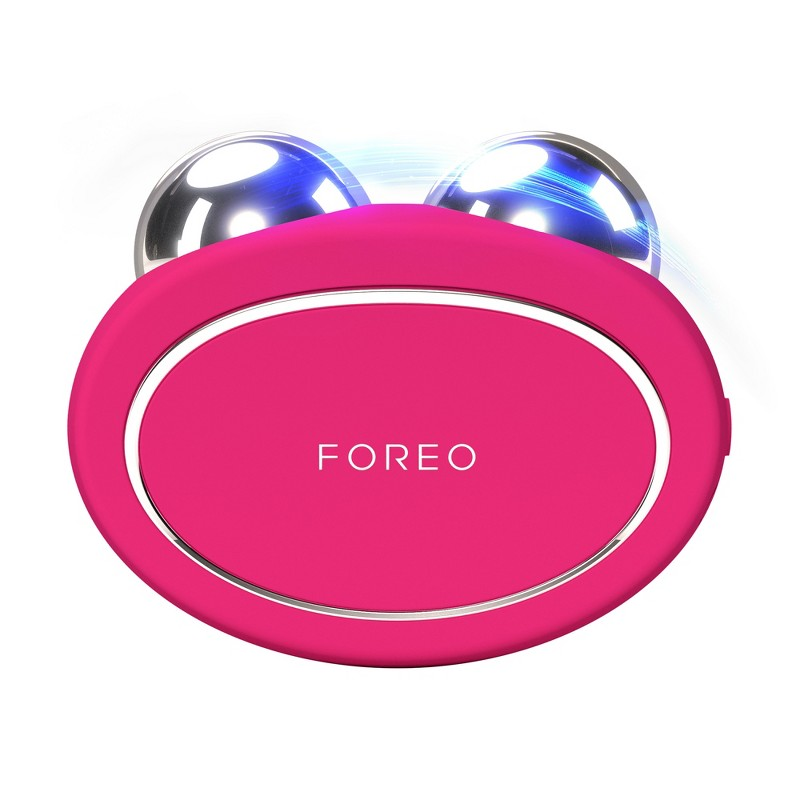

Best Facial Skincare Devices (2026)
— Microcurrent, Toning & Cleansing
At-home facial devices went from niche wellness tools to mainstream skincare essentials — but not all of them are worth the investment. We tested the leading microcurrent toning devices and facial cleansing tools to tell you which ones deliver measurable results, and which are just expensive gadgets.
⚡ Quick Picks
NuFace Trinity+
Best Overall · $325 · FDA-cleared, most versatile
Foreo BEAR 2
Best Premium · $399 · Microcurrent + T-Sonic pulsations
NuFace Mini
Best Budget · $199 · Same technology, compact size
NuFace Trinity+ Microcurrent Device

The NuFace Trinity+ is the gold standard in at-home microcurrent treatment and the only device with FDA clearance for facial toning. The Trinity+ delivers three frequencies — microcurrent, red light, and facial massage — across 69 facial and neck muscles. Clinical studies show measurable improvement in facial contour in 85% of users after 60 days of consistent use. The modular design accepts attachment heads for targeted eye and lip treatment, making it the most versatile device in its class.
Pros
- Only FDA-cleared at-home device
- Modular — expands with attachments
- Clinical evidence backing results
- Works on face, neck, and chest
Cons
- Requires consistent use for results
- Needs activating gel for conductivity
Foreo BEAR 2 Microcurrent Device

The Foreo BEAR 2 combines microcurrent with Foreo's T-Sonic pulsations for a dual-action treatment that users consistently rate as the most spa-like at-home experience. The Anti-Shock System continuously reads your skin and adjusts intensity to prevent discomfort — a feature NuFace doesn't have. The app integration offers 8 intensity levels, guided routines, and skincare pairing recommendations. Our testers with sensitive skin rated it highest for comfort, and the results at 60 days were on par with the Trinity+.
Pros
- Auto-adjusts for sensitive skin
- Most spa-like at-home experience
- App-guided personalized routines
- No activating gel required
Cons
- $399 is the priciest option here
- Not FDA cleared (less established)
NuFace Mini Facial Toning Device

The NuFace Mini delivers the same FDA-cleared microcurrent technology as the Trinity+ in a smaller, travel-friendly form factor at $126 less. It's the best entry point for anyone who wants to experience NuFace results before committing to the full Trinity+ system. The smaller treatment sphere is actually better for targeting the jawline, chin, and delicate areas around the eyes. The only meaningful trade-off is that it doesn't accept the Trinity+ attachment heads for eye and lip treatments.
Pros
- Same microcurrent tech as Trinity+
- FDA cleared
- $126 less than Trinity+
- Great for targeted jawline work
Cons
- No attachment compatibility
- Smaller sphere — slower full-face coverage
Foreo LUNA 4 Facial Cleansing Device

If you're investing in a microcurrent toning device, you should also be cleansing deeply enough for it to work. The Foreo LUNA 4 uses 8,000 T-Sonic pulsations per minute to remove 99.5% of dirt, oil, and makeup residue — including the grime that prevents serums and activating gels from penetrating effectively. The silicone bristles are hygienic (won't harbor bacteria like nylon brushes) and gentle enough for daily use on sensitive skin. After 30 uses you'll wonder how you ever felt clean before.
Pros
- Deep cleanse primes skin for serums
- Hygienic silicone (vs. nylon brushes)
- Gentle enough for sensitive skin
- 650-use battery life is exceptional
Cons
- Cleansing only — no toning/lifting
- Needs replacement head every 6 months